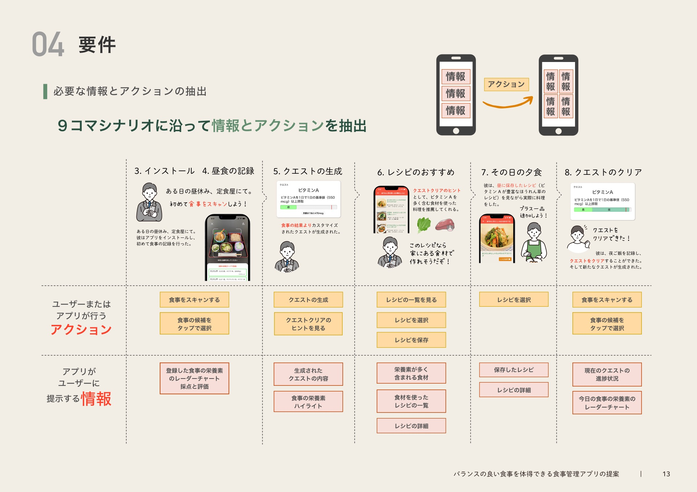

Quest eat - サービスデザイン提案

使用ツール


時期
大学４年の春〜夏

カテゴリー
大学の授業の課題

行ったこと
UI/UX/ロゴ
はじめて、UI/UXデザインを本格的に実践した
この記事では、私が初めてUI/UXデザインを本格的に実践した授業の内容をお話しします。成果物よりもプロセス重視で説明して行こうと思います。さらに、学生の頃に作ったポートフォリオのページも用いながら説明していきたいと思います！
ポートフォリオの表紙
ポートフォリオの表紙の画像
Quest eatとはバランスのいい食事を体得できるアプリ
Quest eatとは?
Quest eatとはユーザーにカスタマイズされた「栄養素クエスト」をクリアしていくことで自然とバランスのいい食事を体得できるアプリです。食事を写真に撮ることで栄養素のバランスが記録され、その記録から「栄養素クエスト」が生成されます。そして「栄養素クエスト」をクリアするヒントとしておすすめの料理が提示されます。その料理を作る（一品追加する）ことで栄養素のバランスが良くなります。このシナリオを繰り返すことでバランスのいい食事を体得していくことが目的です。
情報の見せ方を工夫することでユーザーを変える
取り組んだことを端的に
食事の情報とレシピの情報の見せ方を工夫することで、ユーザーに問題意識とアイデアを与え、行動を変えるように働きかけるようにしました。
食事管理アプリを中心に既存製品を分析
市場製品分析
食事管理アプリを中心に既存製品のUIやコンセプトを分析しました。
食事管理アプリ利用経験のある二人に45分のインタビュー
インタビュー
こちらのインタビューでは「趣味でスポーツをやっている」と「カロリーの感覚を体得」という2つのキーワードを得た。
上位下位関係分析で本質的ニーズを抽出

上位下位関係分析
インタビューで得たユーザーの事象を書き出しグルーピングをして、上位下位関係分析を行いました。結果として「自分の体のことや自分の行為の是非を知り、より健康に元気に生きるための方法を体得して成長したい」という本質的なニーズを発掘できた。
ペルソナの作成
ペルソナの作成
インタビューの内容と上位下位関係分析より発掘した本質的ニーズからペルソナを作成しました。特に「インサイト」の部分を作るのが楽しかった覚えがあります。
問いかけを利用したアイデア発想 - How Might We?
How might we? アイデア発想法
上位下位関係分析より発掘した本質的ニーズと「どのようにすれば...」という問いかけを掛け合わせることでアイデアをできる限りたくさん出していきました。
メタファーを用いてアイデアをより独創的なものにする
メタファーを用いたアイデアブラッシュアップ
How might we?で発想したアイデアの「動詞」を抜き出し、その動詞から連想されるメタファーを考えます。そしてそのメタファーを盛り込んだアイデアを考えることで、より独創的で具体的なアイデアを生成しました。
ペルソナの体験と新規性からアイデアを評価する
コンセプトリンキングマップ
発想したいくつものアイデアを、縦軸を「新規性」横軸を「有効性」と取り、マッピングしました。ここでは結果として、「栄養素クエストレシピ推薦」というアイデアを採用することにしました。
制作物のコンセプトを整理 - 利用期間で異なるUX
コンセプトの整理
「栄養素クエスト レシピ推薦」というアイデアのコンセプトを整理しました。特に利用期間で異なるUXがあることを知りました。予期的UX・瞬間的UX・エピソード的UX・累積的UXの４つのUXを「ユーザーの心の声」と題して整理しました。
ペルソナの体験を９コマシナリオで表現
９コマシナリオ
制作物によってもたらされるペルソナの体験を９コマシナリオで表現しました。
９コマシナリオに沿って情報とアクションを抽出する
アプリの要件抽出
作成した９コマシナリオを１コマずつ分解し、それぞれのコマで行われる「アクション」と必要な「情報」を書き出しました。
抽出したアクションと情報から情報構造図を作成
情報構造図
抽出したアクションと情報から情報構造図を作成しました。特にアプリのルートナビゲーション（ボトムナビゲーション）の要素をここで決定しました。
情報構造図からペーパープロトタイプを制作する
ペーパープロトタイプ
情報構造図からペーパープロトタイプにてワイヤーフレームを制作しました。
ペーパープロトタイプからUIができるまで
UIデザインの試行錯誤
ペーパープロトタイプを参考に、FigmaにてUIをデザインしていきました。３回ほどの試行錯誤の末に完成させました。また、ここの段階でアプリのロゴも作成しました。
UIデザイン
UIデザイン
UIのデザインは上の画像のようになっています。余白を16ピクセルで統一したり、トンマナを意識したりとこだわりました。
コンセプトと動作を表現した動画を作り、発表する
動画制作と評価会の様子
最後に授業で行われた評価会についてお話しします。評価会では動画での発表を行いました。同級生や先生から色々な評価をいただき、自分自身では思いつかない発想や課題が見つかりました。
この授業で学んだことは、UXデザインの概要
UXデザインや人間中心設計、ペルソナやシナリオ法など言葉では知っている物でしたが、実際に制作の中で体系的に学ぶことによって解像度がグンと上がり、自分自身の体に落とし込むような体験ができました。今後も「実践」を通して抽象的な概念や手法などを身につけて、引き出しの多い人になりたいなと思います！